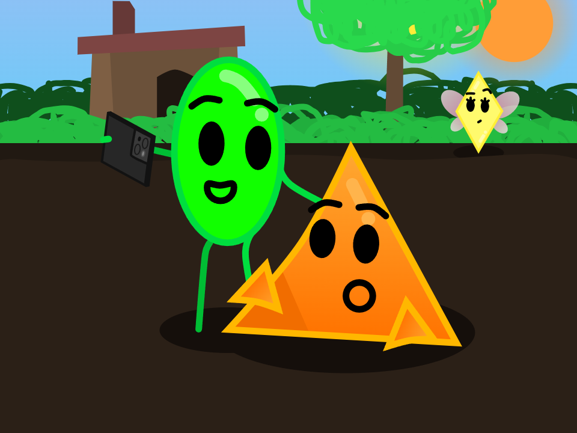
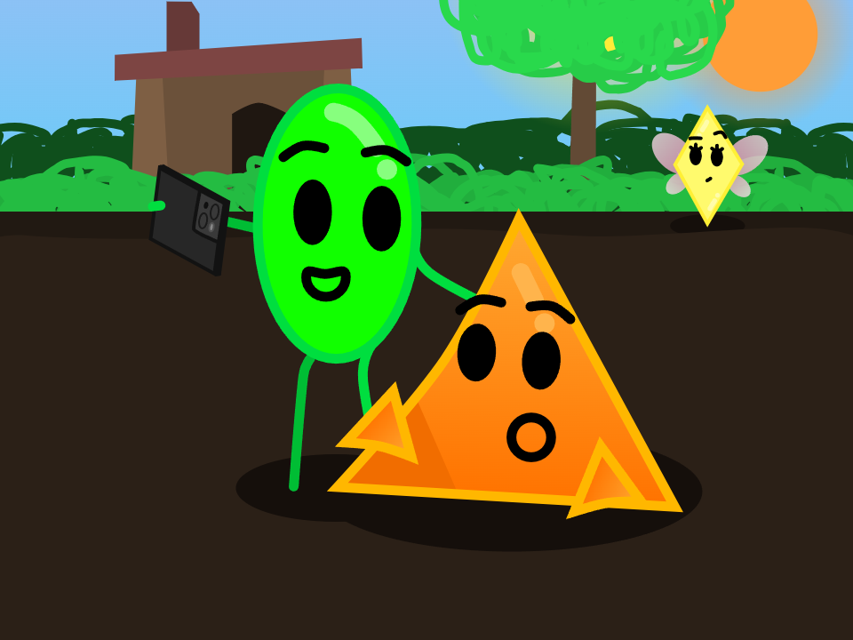
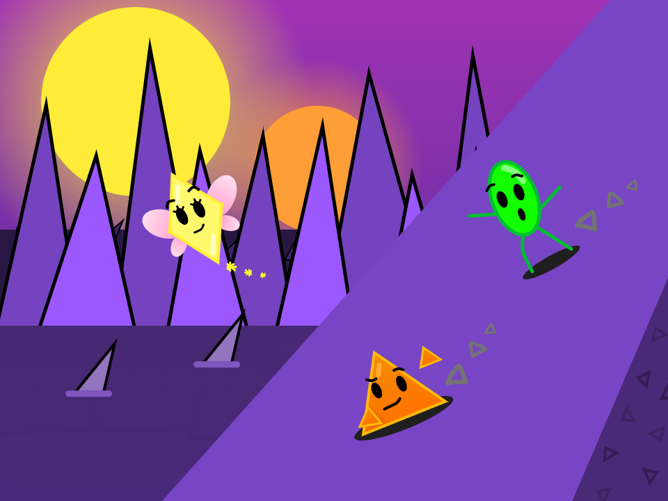

Cory showing George how to take a selfie.
Made with Scratch in August 2024

This is the Art Gallery page. It contains artwork of my games, characters, or some other random stuff.
Sorry if it seems relatively empty at the moment... I'll make more stuff later!
Cory showing George how to take a selfie.
Made with Scratch in August 2024
George, Cory, and Sparky sliding down a hill.
Made with Scratch in April 2023
 My Scratch account's 2-year anniversary art.
My Scratch account's 2-year anniversary art.
Made with Scratch in May 2022